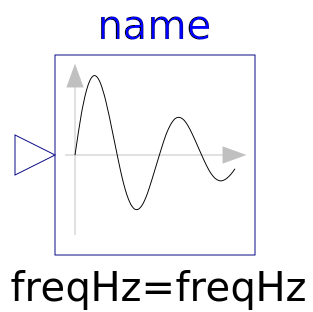

.
Modelica
.
Blocks
.
Sources
.
ExpSine
Information
The Real output y is a sine signal with exponentially changing amplitude:
Generated at 2019-01-24T09:03:13Z by
OpenModelica 1.14.0~dev-130-gefa44fb